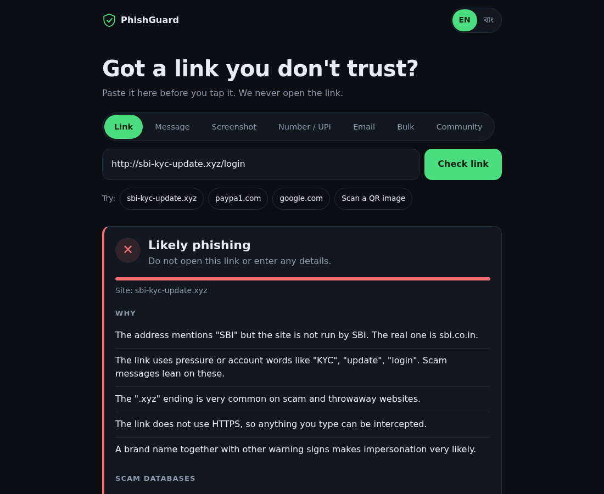

PHISH GUARD
A free phishing and scam checker for India. Paste a link, message, screenshot, number, UPI ID or email headers. English and Bengali.

A free web app that tells you why a link, message or number looks like a scam before you tap or pay. It was built for the Hack for Social Cause hackathon (MY Bharat), theme Digital Safety and Cyber Fraud Awareness, around the scams that spread on WhatsApp, SMS and UPI in India.
What it checks
Warning signs add up to a score: brand impersonation, pressure words like KYC and login, risky endings, no HTTPS, lookalike domains and more. The result lists each reason in plain language. A small model trained on public phishing lists adds an advisory percentage, and it never changes the verdict. The app says "no red flags found", never "safe".
The link is never opened. Screenshot OCR runs in the browser, so the image is not uploaded. Community reports are anonymous: only the scam type, the channel and the state are stored. No link, number, name or IP address is saved, and a rate limit stops spam.